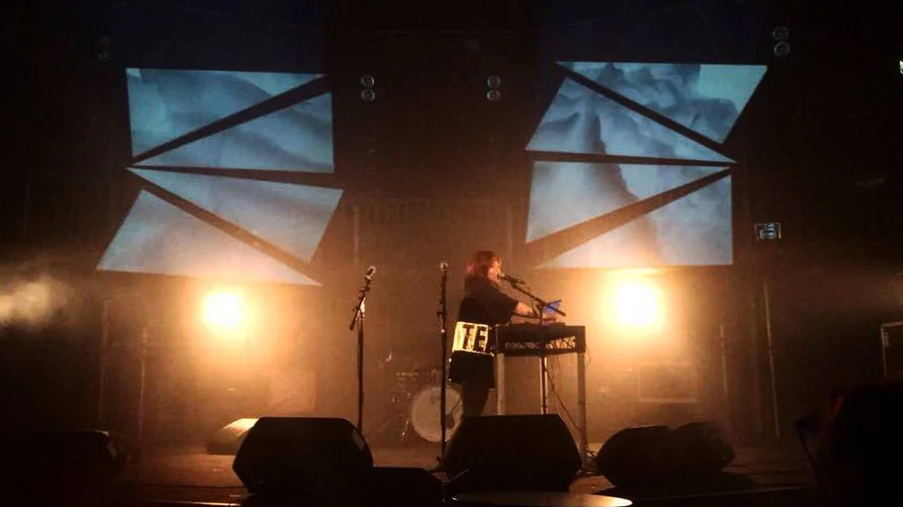
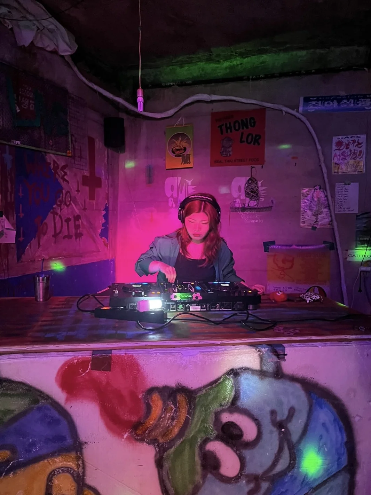
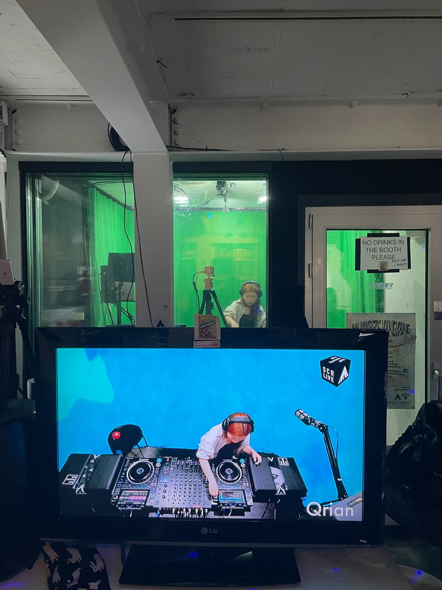

Speaking in QRIAN
Speaking in QRIAN brings together QRIAN's live electronic music and DJ practice. Extending from songwriting and self-produced releases into performance, it traces music as a shifting language across voice, electronics, club environments and live contexts.
Selected Live Performances


Archived Live
An archived full live performance of the debut EP QRIAN.
DJing & Mixsets
Alongside live performance, QRIAN has DJed in Seoul's underground club spaces since 2023, including ACS and Cakeshop. Archived mixsets move through electronic club music including jungle, grime and UK garage.


Related Music
The wider music practice also includes QRIAN's self-written, composed and produced releases and live-event production.